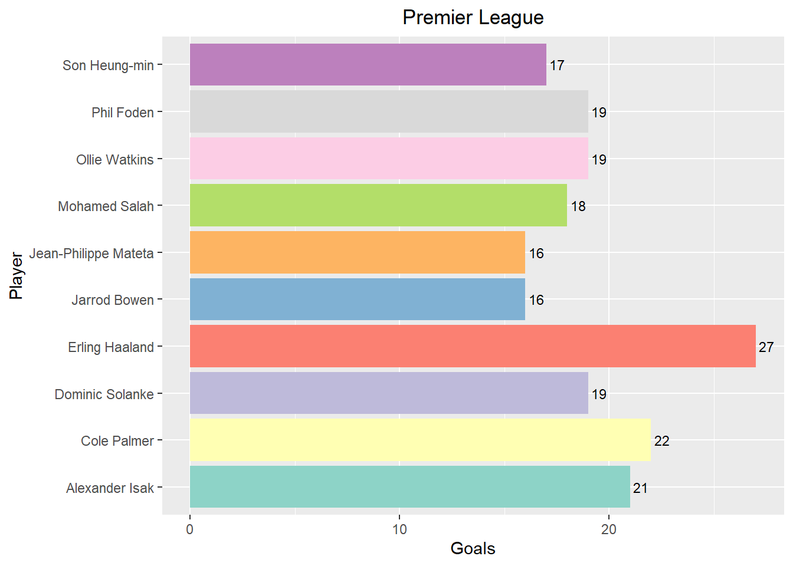
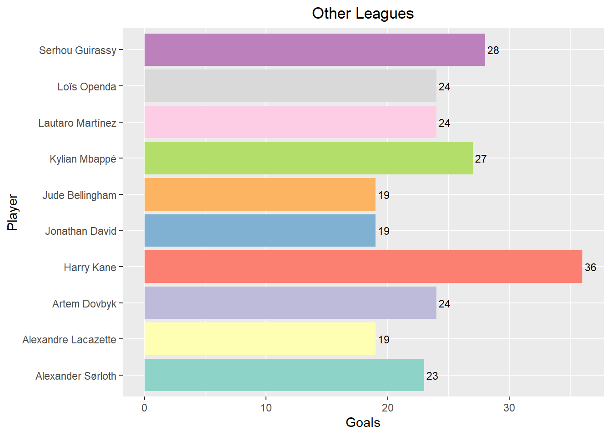
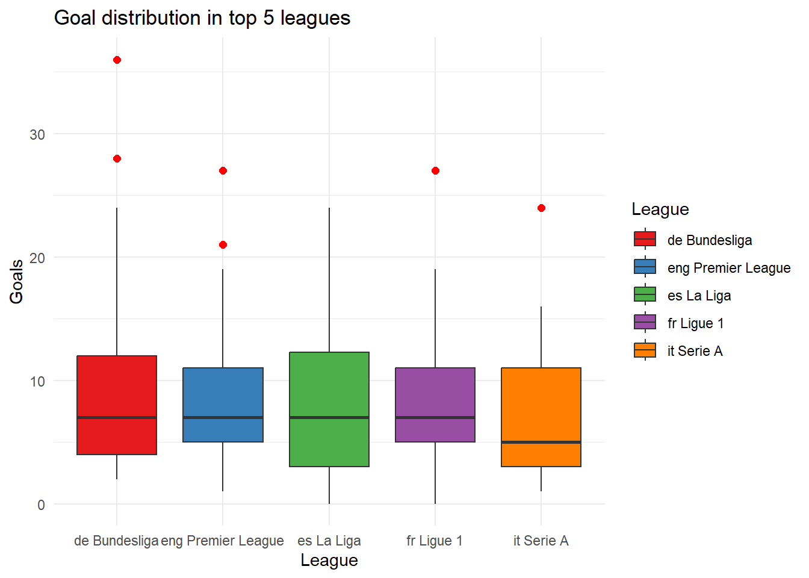
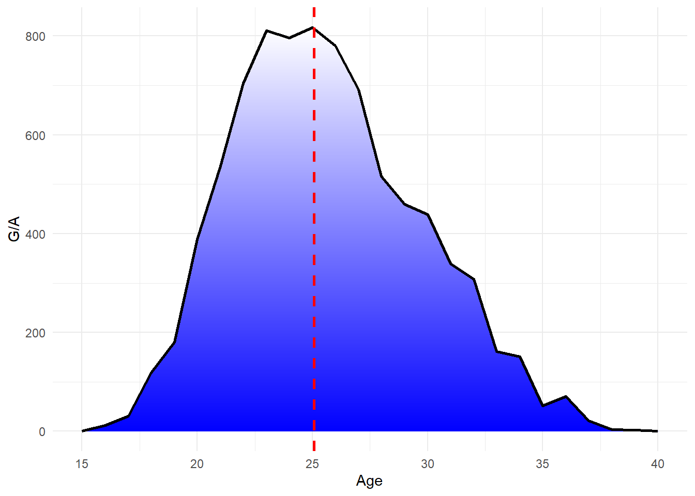
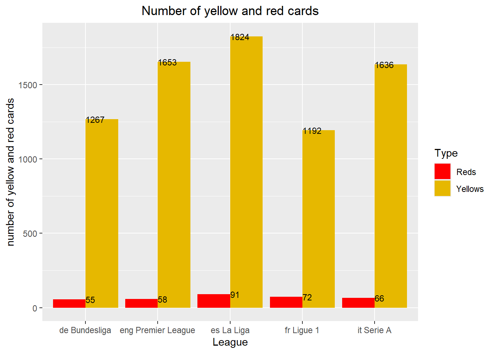
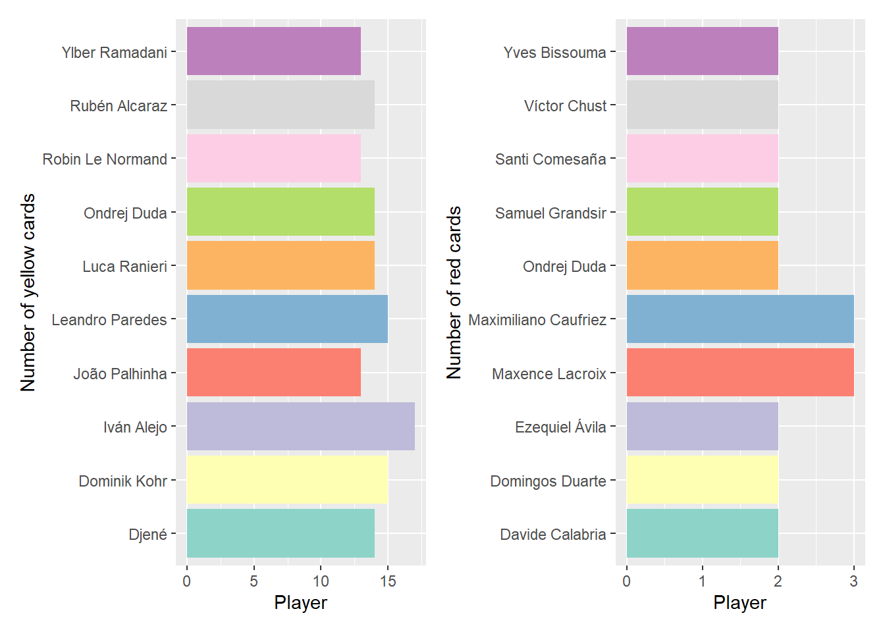
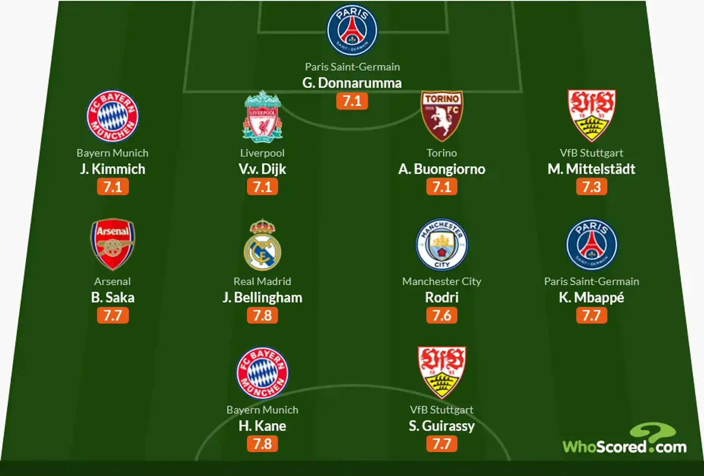
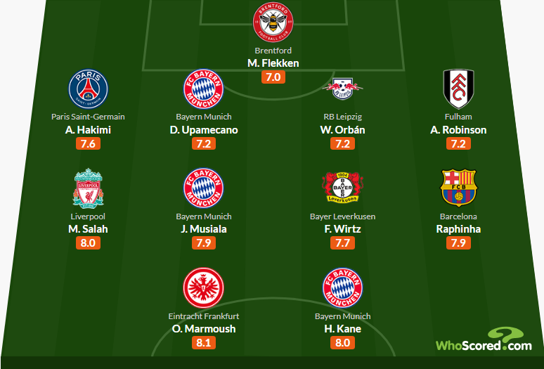

Analysis of Selected Player Statistics from the Top 5 European Football Leagues for the 2023/24 Season.
Data acquisition and visualization project
1. Introduction to the Project Objectives.
In modern football, increasing attention is given to minor statistics that do not necessarily reflect a player’s true abilities. A particularly interesting phenomenon is the overestimation of certain players based on their nationality or the league they play in. In the first part of this project, I will primarily compare the English Premier League, often considered the best in the world, with its main competitors from the European continent, as well as compare players of different nationalities. Starting with the most crucial aspects of football—goals and assists.
2. Goals and Assists Comparison Between Leagues.
2.1 Top Scorers in England vs. the Rest of Europe

As seen in the charts, the English league performs relatively well in Europe, with three players ranking in the top 10 goal scorers. However, the highest-scoring players in England fell short of competing with the absolute best. This does not necessarily mean that other leagues are superior, as stronger leagues often host better defenders, which leads to fewer goals scored by offensive players. Notably, Harry Kane dominated the goal-scoring charts despite playing fewer matches.
2.2 Direct Comparison of All Strikers Who Played at Least 10 Full Matches.

Bundesliga and Serie A: Most diverse in terms of both average players and top scorers.
Premier League and La Liga: More consistent results with standout players (visible outliers).
Ligue 1: The most balanced league, with smaller differences between players and fewer dominant strikers.
3. Age Factor.

The chart above illustrates the age distribution of players in relation to their goal involvements. The most effective players are concentrated around 25 years old, with a declining trend on both sides (younger and older players). The red dashed line marks the average age in the top 5 leagues, which is precisely 25 years. This is no coincidence, as this age balances acquired experience with youthful energy.
4. Nationality-Based Trends.
The map highlights the number of representatives from each country playing in the top 5 leagues. Most players come from Europe, with the top three being Spain, France, and Germany. South American countries such as Brazil and Argentina also have strong representation. Africa shows a decent player density, though not in absolute numbers. Asia has the weakest representation relative to its population size.
A subsequent chart illustrates the percentage of players from each country in Europe’s top leagues. Unsurprisingly, about 90% of players compete in their domestic leagues. For those who cannot, language often determines their destination—for example, many Argentinians play in Spain.
5. Match Endurance.
The chart displays the 15 outfield players with the most minutes played during the season. Notably, only three of the top five leagues are represented, as the German and French leagues have two fewer teams, reducing the maximum available minutes. Most of the featured players are defenders, as their stronger physique and lower injury risk allow them to play more matches.
6. Most Penalized Players.

The chart indicates significant disparities in yellow and red cards across leagues. La Liga records about 150% more yellow cards than France’s Ligue 1. Spain has the highest figures for both yellow and red cards, suggesting a more aggressive playing style.

7. Best XI of Last and Current Season Based on Match Ratings.
|  |  |
The image compares the best “eleven” players from last season (left) and the current season (right), according to WhoScored ratings. Player ratings are on a 10-point scale, with higher values indicating better performances over the season. A noticeable trend is the dominance of Bayern Munich and PSG players, which is unsurprising given their stronghold in their respective leagues.
8. Expected Goals (xG).
The xG (Expected Goals) statistic calculates the probability of scoring from a given position based on factors like distance from goal. A value of 0.38 xG is considered a high chance. The chart above features the 50 players with the highest total xG from last season. Notably, Ligue 1 and Serie A have fewer top-performing players in this category.
9. Best Assist Providers in Europe.
Examining the top 100 assist providers in the top 5 leagues, special attention goes to players from the English Premier League and the German Bundesliga, marked in blue and red, respectively. No player significantly outperformed in terms of total assists, but nearly 40% of the top assist providers played for English clubs last season.
10. Project Summary.
Analyzing football statistics makes it difficult to draw definitive conclusions. Many aspects of football are subjective, meaning that for some, a club or league is the best due to personal preference. As demonstrated in previous charts, many players cannot be directly compared, especially based on position. While statistics provide valuable insights, many elements of football cannot be quantified. The final chart showcases the scale of the database used for this project.